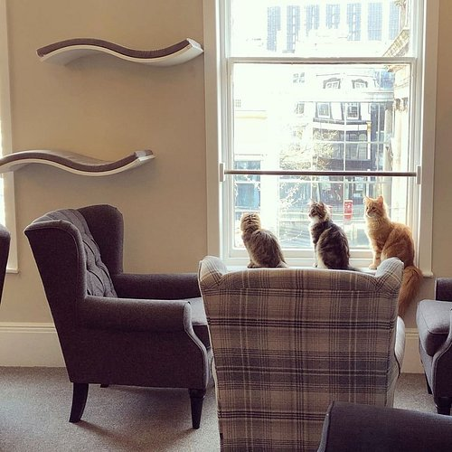
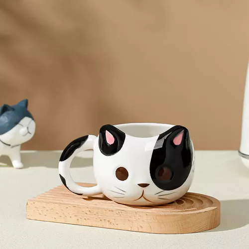
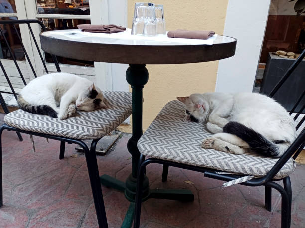

Gato 1
Aqui podemos apreciar la primera opcion de gatito a elegir en la cafeteria de gatitos.
Gato 2
Segunda opcion de gato para acompañarte en un rico cafe por la mañana!
Gato 3
Ultimo gato que se puede seleccionar dentro de la cafeteria Gatitos Online.
Ven a vivir la experiencia!.
Te renovara la energia.
La cafeteria "Gatitos" esta perfectamente ambientada y preparada para recibirte con mucha ternura y cosas deliciosas para animar tu día.
Placeholder
Tematica completa en gatos!. Para que no dejes de amarlos.
Nuestra cafeteria esta completamente ambientada en felinos para sumergirte mas en la atmosfera y llenarte de mucha energia.
Placeholder
Gatitos vacunados y desparasitados!
Para que no temas en acariciarlos y mimarlos!
En cafeteria "Gatitos" nos preocupas de la salud tanto tuya como la de nuestros mininos, asi que no tengas miedo de estar junto a ellos.
Placeholder